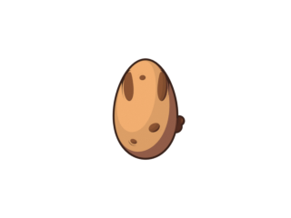
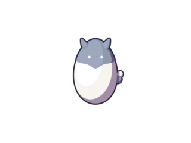
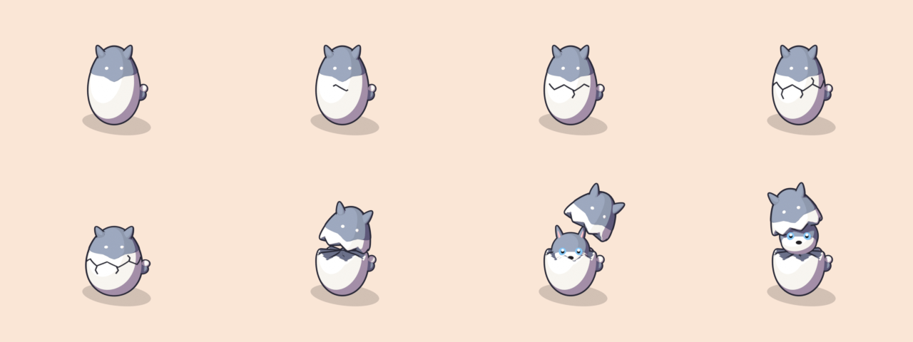

Each pet now starts life as an egg. It cools unless you stroke it, falls over if you tip the device too far, cracks after eight warm hours, and hatches the next day only while someone is handling it. Spot the ideas, run the experiments and collect the stickers.

Specimen A · the sausage dog's eggField marks: caramel shell, drooping cocoa ear patches, spots, a tail curl on the side. About 112 px tall on the device.

Specimen B · the husky's eggField marks: grey cap with a V-shaped peak, soft pointed ear bumps, white base, a tail curl. Reads as an egg wearing a husky hood.

The egg you see in the simulator is still drawn in code from basic shapes, a stand-in so the rules have something to show. Stage 3 replaces it with these Blender sprites.
Life owns one timeline: egg, a short hatching moment, then the baby. The egg steps every second; once the baby exists, the Stage 1 needs simulation takes over with its one-minute steps and any leftover time.
flowchart TD
subgraph egg["Egg · steps every 1 s"]
W["Warmth 0-100
starts at 80 · drains 12/h
+2 per stroke · ×2 when toppled"]
B["Balance
lean from gravity
topples past 30° · rights at 15° back or a tap"]
I["Incubation
counts while warmth ≥ 50"]
W --> I
B -. toppled cools faster .-> W
end
I -->|"8 h warm time"| C1["First crack"]
C1 --> HD["Hatch day opens
first wake time after the crack
(05:30 crack → 07:00 the same morning)"]
HD --> A["Attention minutes
egg handled in the last 10 s, screen on"]
A -->|"5 min"| C2["Second crack"]
A -->|"10 min"| C3["Third crack"]
A -->|"15 min"| H["Hatching · 5 s"]
H --> Baby["Baby
Stage 1 needs simulation"]
Egg.h/.cpp: warmth, balance, incubation, attention, in phases Incubating → Cracked → HatchDay → Hatched.Life.h/.cpp: LifeStage::Egg → Hatching → Baby on one clock.Platform.h: a gravity vector, shake and face-down from the accelerometer, plus leanDegrees().nextWakeAfter() finds when hatch day opens.art/lib/egg.py plus one script per pet: stages 0–3 and four hatch poses.test_egg (10) and test_hatch (12), all in firmware/test/.Each has a real name you can look up. Find it in its habitat, then mark it spotted.
Run firmware commands from the firmware/ folder. Undo any edits afterwards by running git restore . from the repo root, which puts every tracked file back exactly as committed.
A pull request is a proposal: "merge these commits into main". Reviewing it means reading the change and saying yes, no or not yet. Worked example: PR #14, Stage 2.
Locked stickers show as grey silhouettes, the same trick the pets' awards book will use. Progress is saved in this browser only.